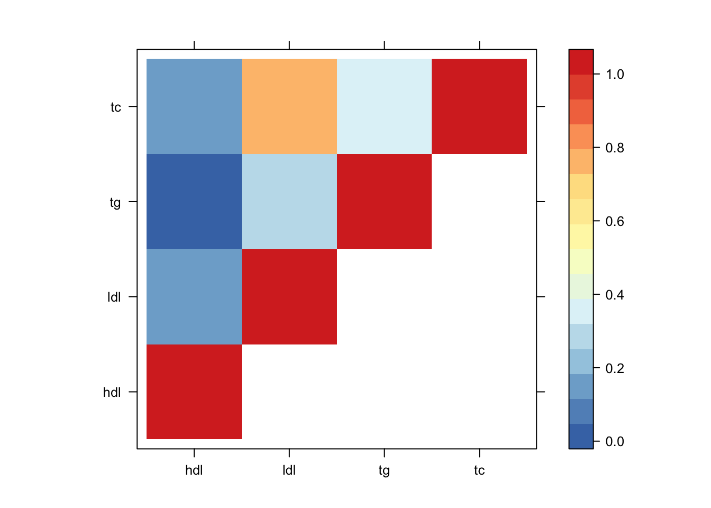
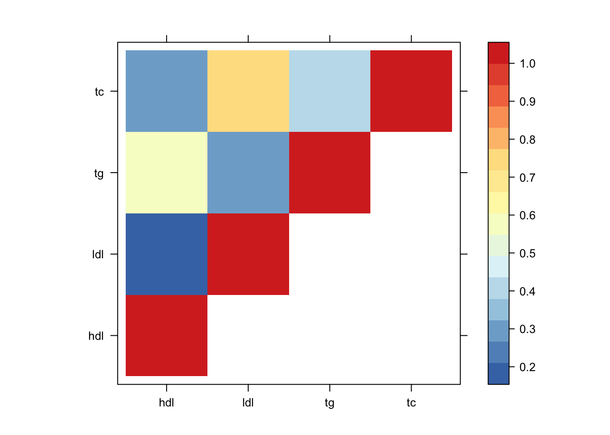
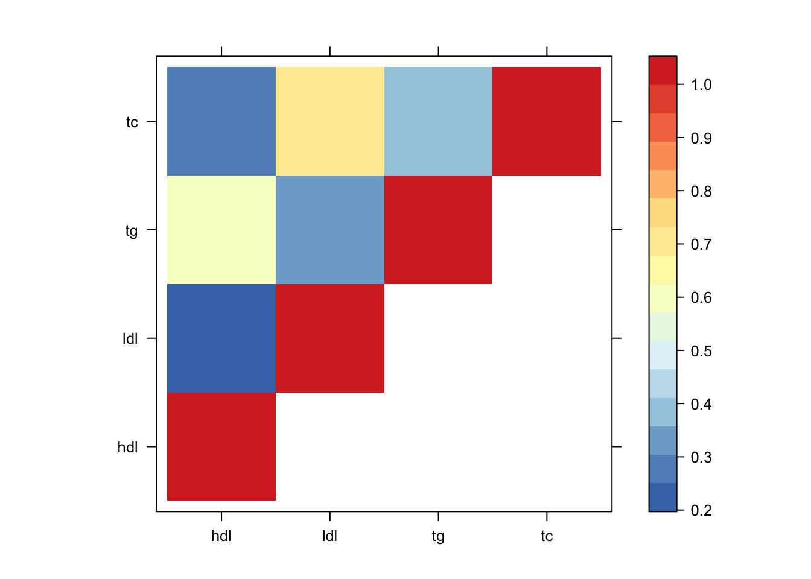

Last updated: 2020-03-08
Checks: 5 2
Knit directory: lipids_mvp/
This reproducible R Markdown analysis was created with workflowr (version 1.6.0). The Checks tab describes the reproducibility checks that were applied when the results were created. The Past versions tab lists the development history.
The R Markdown file has unstaged changes. To know which version of the R Markdown file created these results, you’ll want to first commit it to the Git repo. If you’re still working on the analysis, you can ignore this warning. When you’re finished, you can run wflow_publish to commit the R Markdown file and build the HTML.
Great job! The global environment was empty. Objects defined in the global environment can affect the analysis in your R Markdown file in unknown ways. For reproduciblity it’s best to always run the code in an empty environment.
The command set.seed(20190925) was run prior to running the code in the R Markdown file. Setting a seed ensures that any results that rely on randomness, e.g. subsampling or permutations, are reproducible.
Great job! Recording the operating system, R version, and package versions is critical for reproducibility.
Nice! There were no cached chunks for this analysis, so you can be confident that you successfully produced the results during this run.
Using absolute paths to the files within your workflowr project makes it difficult for you and others to run your code on a different machine. Change the absolute path(s) below to the suggested relative path(s) to make your code more reproducible.
| absolute | relative |
|---|---|
| ~/lipids_mvp/analysis/ | analysis |
Great! You are using Git for version control. Tracking code development and connecting the code version to the results is critical for reproducibility. The version displayed above was the version of the Git repository at the time these results were generated.
Note that you need to be careful to ensure that all relevant files for the analysis have been committed to Git prior to generating the results (you can use wflow_publish or wflow_git_commit). workflowr only checks the R Markdown file, but you know if there are other scripts or data files that it depends on. Below is the status of the Git repository when the results were generated:
Ignored files:
Ignored: .DS_Store
Ignored: .Rapp.history
Ignored: .Rhistory
Ignored: analysis/.DS_Store
Ignored: analysis/.Rhistory
Ignored: analysis/analysingrepro.nb.html
Ignored: analysis/looking_at_significance.nb.html
Ignored: analysis/looking_at_significance_cache/
Ignored: analysis/simualtions.nb.html
Ignored: analysis/simulations.nb.html
Ignored: analysis/workingwithdata.nb.html
Ignored: analysis/workingwithdata_cache/
Ignored: scripts/.Rapp.history
Untracked files:
Untracked: analysis/Comparingwithklarin.Rmd
Untracked: scripts/determining_thresholds.R
Untracked: scripts/ld.R
Untracked: scripts/mh_plot.R
Untracked: scripts/sorting_blocks.R
Untracked: smu_manhattan.R
Unstaged changes:
Modified: analysis/sharing.Rmd
Note that any generated files, e.g. HTML, png, CSS, etc., are not included in this status report because it is ok for generated content to have uncommitted changes.
These are the previous versions of the R Markdown and HTML files. If you’ve configured a remote Git repository (see ?wflow_git_remote), click on the hyperlinks in the table below to view them.
| File | Version | Author | Date | Message |
|---|---|---|---|---|
| Rmd | 76cc40a | Sarah Urbut | 2019-10-27 | Update |
| html | 76cc40a | Sarah Urbut | 2019-10-27 | Update |
| Rmd | e805632 | Sarah Urbut | 2019-10-22 | Update |
| html | e805632 | Sarah Urbut | 2019-10-22 | Update |
| Rmd | 72c5aec | Sarah Urbut | 2019-10-07 | Update with absolute value |
| html | 72c5aec | Sarah Urbut | 2019-10-07 | Update with absolute value |
Attaching package: 'gplots'The following object is masked from 'package:stats':
lowessWarning in fread("~/Dropbox/post_means_mvp_for_ldpred.txt"): Detected 7 column
names but the data has 8 columns (i.e. invalid file). Added 1 extra default
column name for the first column which is guessed to be row names or an index.
Use setnames() afterwards if this guess is not correct, or fix the file write
command that created the file to create a valid file.thresh=0.05
pm.mash.beta=pm.mash[rowSums(lfsr.all[,c(3:6)]<0.05)>0,]
lfsr.mash=lfsr.all[rowSums(lfsr.all[,c(3:6)]<0.05)>0,]
pm.mash.beta=data.frame(pm.mash.beta[,c("hdl","ldl","tg","tc")])
lfsr.mash=lfsr.mash[,c("hdl","ldl","tg","tc")]
shared.fold.size=matrix(NA,nrow = ncol(lfsr.mash),ncol=ncol(lfsr.mash))
colnames(shared.fold.size)=rownames(shared.fold.size)=colnames(lfsr.mash)
for(i in 1:ncol(lfsr.mash)){
for(j in 1:ncol(lfsr.mash)){
sig.row=which(lfsr.mash[,i]<thresh)
sig.col=which(lfsr.mash[,j]<thresh)
a=(union(sig.row,sig.col))
#a=(intersect(sig.row,sig.col))
#quotient=abs(pm.mash.beta[a,i]/pm.mash.beta[a,j])
quotient=(pm.mash.beta[a,i]/pm.mash.beta[a,j])##divide effect sizes
##divide effect sizes
shared.fold.size[i,j]=mean(quotient>0.5"ient<2)
}}library(lattice)
clrs <- colorRampPalette(rev(c("#D73027","#FC8D59","#FEE090","#FFFFBF",
"#E0F3F8","#91BFDB","#4575B4")))(64)
lat=shared.fold.size
lat[lower.tri(lat)] <- NA
print(levelplot(lat,col.regions = clrs,xlab = "",ylab = "",colorkey = TRUE))
Now by absolute value:
thresh=0.05
shared.fold.size=matrix(NA,nrow = ncol(lfsr.mash),ncol=ncol(lfsr.mash))
colnames(shared.fold.size)=rownames(shared.fold.size)=colnames(lfsr.mash)
for(i in 1:ncol(lfsr.mash)){
for(j in 1:ncol(lfsr.mash)){
sig.row=which(lfsr.mash[,i]<thresh)
sig.col=which(lfsr.mash[,j]<thresh)
a=(union(sig.row,sig.col))
#a=(intersect(sig.row,sig.col))
#quotient=abs(pm.mash.beta[a,i]/pm.mash.beta[a,j])
quotient=abs(pm.mash.beta[a,i]/pm.mash.beta[a,j])##divide effect sizes
##divide effect sizes
shared.fold.size[i,j]=mean(quotient>0.5"ient<2)
}}Here’s if we do by absolute value:
library(lattice)
clrs <- colorRampPalette(rev(c("#D73027","#FC8D59","#FEE090","#FFFFBF",
"#E0F3F8","#91BFDB","#4575B4")))(64)
lat=shared.fold.size
lat[lower.tri(lat)] <- NA
print(levelplot(lat,col.regions = clrs,xlab = "",ylab = "",colorkey = TRUE))
Now by significancs
thresh=0.05
shared.fold.size=matrix(NA,nrow = ncol(lfsr.mash),ncol=ncol(lfsr.mash))
colnames(shared.fold.size)=rownames(shared.fold.size)=colnames(lfsr.mash)
for(i in 1:ncol(lfsr.mash)){
for(j in 1:ncol(lfsr.mash)){
sig.row=which(lfsr.mash[,i]<thresh)
sig.col=which(lfsr.mash[,j]<thresh)
a=(union(sig.row,sig.col))
#a=(intersect(sig.row,sig.col))
#quotient=abs(pm.mash.beta[a,i]/pm.mash.beta[a,j])
##divide effect sizes
shared.fold.size[i,j]=length(intersect(sig.row,sig.col))/length(a)
}}Here’s if we do by absolute value:
library(lattice)
clrs <- colorRampPalette(rev(c("#D73027","#FC8D59","#FEE090","#FFFFBF",
"#E0F3F8","#91BFDB","#4575B4")))(64)
lat=shared.fold.size
lat[lower.tri(lat)] <- NA
print(levelplot(lat,col.regions = clrs,xlab = "",ylab = "",colorkey = TRUE))
sessionInfo()R version 3.5.2 (2018-12-20)
Platform: x86_64-apple-darwin15.6.0 (64-bit)
Running under: macOS 10.15.2
Matrix products: default
BLAS: /Library/Frameworks/R.framework/Versions/3.5/Resources/lib/libRblas.0.dylib
LAPACK: /Library/Frameworks/R.framework/Versions/3.5/Resources/lib/libRlapack.dylib
locale:
[1] en_US.UTF-8/en_US.UTF-8/en_US.UTF-8/C/en_US.UTF-8/en_US.UTF-8
attached base packages:
[1] stats graphics grDevices utils datasets methods base
other attached packages:
[1] lattice_0.20-38 data.table_1.12.8 ggplot2_3.2.1 gplots_3.0.1.2
loaded via a namespace (and not attached):
[1] Rcpp_1.0.3 compiler_3.5.2 pillar_1.4.3 later_1.0.0
[5] git2r_0.26.1 highr_0.8 workflowr_1.6.0 bitops_1.0-6
[9] tools_3.5.2 digest_0.6.23 evaluate_0.14 lifecycle_0.1.0
[13] tibble_2.1.3 gtable_0.3.0 pkgconfig_2.0.3 rlang_0.4.4
[17] yaml_2.2.1 xfun_0.12 withr_2.1.2 stringr_1.4.0
[21] dplyr_0.8.4 knitr_1.28 fs_1.3.1 gtools_3.8.1
[25] caTools_1.17.1.2 tidyselect_1.0.0 rprojroot_1.3-2 grid_3.5.2
[29] glue_1.3.1 R6_2.4.1 rmarkdown_2.1 gdata_2.18.0
[33] purrr_0.3.3 magrittr_1.5 whisker_0.4 backports_1.1.5
[37] scales_1.1.0 promises_1.1.0 htmltools_0.4.0 assertthat_0.2.1
[41] colorspace_1.4-1 httpuv_1.5.2 KernSmooth_2.23-16 stringi_1.4.5
[45] lazyeval_0.2.2 munsell_0.5.0 crayon_1.3.4